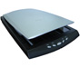

典型产品一：
 方正科技集团股份有限公司
方正科技集团股份有限公司
北大方正集团由北京大学1986年投资创办，是中国著名的IT企业，在中国IT产业发展进程中占据着重要的地位。拥有5家在上海、深圳、香港及马来西亚交易所上市的公众公司和遍布海内外的20多家独资、合资企业，员工2万多人。
名列国家首批6家技术创新试点企业之一，500家国有大型企业集团之一，120家大型试点企业集团之一，2005年电子信息百强企业排序第十一，北京企业百强第九，2005年集团销售收入245亿元。
方正集团是一家真正拥有自主知识产权技术的高科技企业，拥有并创造对中国IT产业发展和大规模应用至关重要的核心技术，是中国重要的软件出口企业。在国家组织的重大科技攻关项目“748工程”中，王选教授发明的激光照排技术，经方正集团成功转化并产业化，彻底使中国印刷业告别了铅与火时代。如今，新闻出版领域的技术占据了国内85％以上的市场份额，印刷领域的相关产品成功挺进海外市场，覆盖了亚太和欧美的30多个国家和地区，市场占有率逐年提高。
与此同时，方正进军PC制造领域，构筑中国IT产业发展和大规模应用的制造基础，连续6年稳居行业第二的地位。面对市场竞争，方正快速向IT产业更具增加值的上游环节转移，先后进入电路板、芯片制造领域。
2004年6月，方正依托北大的医学资源，以医疗管理公司的方式切入医疗、医药领域，引入国际资本共同投资巨型医院，打造医疗、医药平台。
方正集团坚持以IT、医疗医药为主业，有选择地进入某些传统行业，主动寻求跨越式发展机遇，将方正做实、做强、做大，成为一个国际化的企业集团。
参考网址：http://pp.ppsj.com.cn/founder/
| 产品名称 | 产品介绍 | 产品价格 |
|
方正扫描仪U300
|
精确捕捉细微的图像信息，色彩丰富 - 超级处理速度，6秒预扫 - 五个快捷按键，轻轻一点，工作全了 - 方正办公软件，助力办公信息化。采用先进的多识别引擎，印刷体识别率高达99%，中英混编识别率达98%。 奔腾处理器的兼容机或更高，Microsoft Windows 98/ME/2000/XP
|
799 |
|
方正扫描仪V80--新品
|
拼接软件，幅面不限；无需电源，USB供电；巧用空间，立式扫描；超薄设计，精巧美观。 VISTA系统全面支持。方正扫描仪V80 是方正科技针对家庭和普通办公推出的时尚型扫描仪，他横向开盖，外观时尚，超薄设计，附送方正图像拼接软件，多大幅面的原稿都能解决，能够方便快捷的扫描报纸、图纸、照片、文稿、杂志等等 |
399 |
|
方正扫描仪U430
|
大幅面127mm×178mm投射扫描，功能强大 - 高速自动完成文档数字化工作 - 轻松快速编辑您看到的中英文资料 - 快捷按键，；外观庄重典雅，采用2400DPI*4800DPI超高分辨率CCD、48位色彩通道、USB2.0高速数据传输接口、可以扫描35mm正负片/幻灯片/120底片/220底片等多种规格透射稿的透扫器、先进的自动锁功能、复印/OCR/节能/电邮/自定义等5个快捷按键、智能化的驱动界面，并配备了超值的应用程序软件包。 |
1250 |
联系方式：
地 址：北京市海淀区成府路298号中关村方正大厦9层
邮 编：100871
电 话：010－82529966
传 真：010－82529506
E-mail:contact@founder.com
典型产品二：
清华紫光股份有限公司
清华紫光股份有限公司经国家经贸委和国家教育部批准发起设立，是清华紫光集团最重要的组成部分和面向资本市场的窗口。
清华紫光股份有限公司紧密依托清华大学雄厚的科研力量、丰富的人才资源和多学科综合优势,按照现代企业制度,以人才为本,创新为根,资本为翼,构建面向二十一世纪的新型高科技企业,力争成为我国信息产业、环保产业的重要组成部分。
清华紫光股份有限公司的主要发起人-清华紫光（集团）总公司，是全国高新技术产业“百强”之一，全国电子“百强”企业之一,北京市新技术产业开发试验区“经济二十强”企业之一，北京市“扶优扶强”重点企业之一；也是曾荣获多项国家技术发明奖和国家科技进步奖的“重点高新技术企业”。
清华紫光股份有限公司汲取清华紫光十载创业积累和文化精髓，充分利用人才优势、创新优势、品牌优势、渠道优势，在计算机输入技术和设备、软件技术、系统集成、网络技术和环保设备研制与开发、环保工程系统集成、环保监测仪器制造及环保技术咨询等领域，继往开来，推陈出新，寻觅新的攀升。
清华紫光股份有限公司将以市场为导向,有效发挥资源整合优势和技术对市场的推动作用,通过产品经营与资本经营的结合，加速高新技术成果的产业化、规模化，为企业的可持续发展，不断增加技术储备和新的利润增长点，成为与清华大学相般配的高新技术企业。
参考网站:http://www.thunis.com/
| 产品名称 | 产品介绍 | 产品价格 |
|
Uniscan B780 
|
光学分辨率：2400dpi（V）×1200dpi（H） 最大分辨率：24000dpi×24000dpi 接口类型： USB2.0 扫描范围： A4幅面/216×297mm 透 射 稿： 60×170mm（135/120/220底片） 色彩位数： 48-bit 动态密度： 2.6D 光 源： 冷阴极灯管 灯管寿命： 15000小时 ＭＴＢＦ： 5000小时 快 捷 键： 文件/复印/扫描/OCR/E－Mail（OCR键＝Word文档） 外形尺寸： 435mm(W) ×265mm(D) × 75mm(H) 重 量： 2.7kg 附赠软件： Twain Driver / TH-OCR XP /
AcrobatReader/ |
799 |
|
Uniscan C1800
|
光学分辨率：6400dpi（V）×3200dpi（H） 最大分辨率：24000dpi×24000dpi 接口类型： USB2.0 扫描范围： A4幅面/216×297mm 色彩位数： 48-bit 动态密度： 3.0D 光 源： 冷阴极灯管 灯管寿命： 15000小时 ＭＴＢＦ： 5000小时 快 捷 键： Custom/COPY/SCAN/OCR/E-Mail 外形尺寸： 435mm(L) ×265mm(W) × 78mm(H) 重 量： 2.7kg 附赠软件： Twain Driver/TH-OCRXP/ABBYY FineReader/ |
999 |
|
|
光学分辨率：4800dpi（V）×1200dpi（H）
|
499 |
联系方式：
公司地址：北京市清华大学东门紫光大楼
邮 编:100084
联系电话:010-62701070
传 真:010-62546081